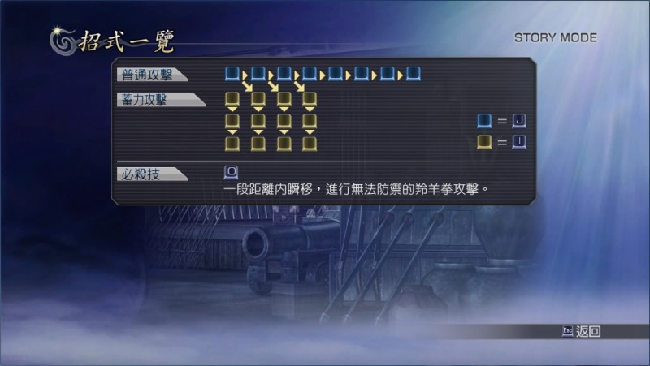

re:其他聲優演出
其實我聽力辨識度有問題，所以我以為大眾臉裡面有一個是喜安浩平配的，他曾配過幕之內一步。
不過，在我誤以為大眾臉的聲音跟幕之內一步一樣時，每次遇到他們就會想起小人物奮戰的情節，玩的時候讓我感覺還蠻有趣的。
所以我便繼續當某些類似喜安浩平的大眾臉是幕之內一步向我衝過來，想像他們能夠發動這樣的攻擊……
ＴＡ 羚羊拳 （有瞬移效果）
Ｃ１ 佯攻
Ｃ２ 左拳刺擊 （有挑空效果）
Ｃ３ 肝臟攻擊 （有擊暈效果）
Ｃ４ 右拳重擊 （帶屬性攻擊）
無雙 輪轉位移

如果大眾臉能夠照「C1→TA→C3→無雙」的順序把我 KO，不曉得該哭還是該笑。